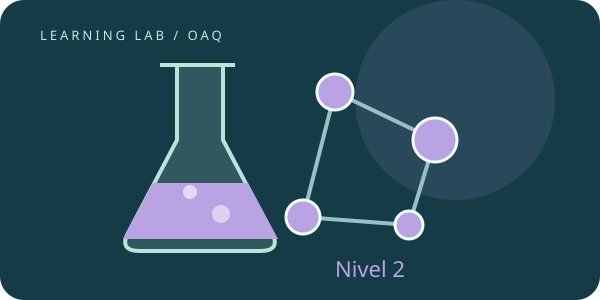

OAQ · ESTUDIO AUTÓNOMO
Nivel 2
Usá modelos cuantitativos de materia, termodinámica, cinética y equilibrio.
Punto de partida. Antes de empezar, repasá Nivel Inicial, Nivel 1. Los contenidos se acumulan.

SEGUÍ EL ORDEN O ELEGÍ QUÉ REPASAR
Las cuatro series del nivel.
Fases, idealidad y propiedades coligativas
Equilibrio de fases y presión de vapor · Henry y desviaciones de idealidad · Contar partículas en propiedades coligativas · De una medición a una fórmula o masa molar
Lecciones + laboratorio + repaso ↗0 de 4 lecciones comprobadasSERIE 2 · 4 LECCIONESEstructura cuántica y enlace
Llenar orbitales con reglas claras · Interpretar tendencias y polarización · Lewis, resonancia y tipos de enlace · Leer estructuras orgánicas e isomería
Lecciones + laboratorio + repaso ↗0 de 4 lecciones comprobadasSERIE 3 · 4 LECCIONESTermodinámica y cinética
Conservar energía y usar Hess · Predecir espontaneidad con Gibbs · Determinar una ley de velocidad · Relacionar barreras y mecanismos
Lecciones + laboratorio + repaso ↗0 de 4 lecciones comprobadasSERIE 4 · 4 LECCIONESEquilibrios químicos y electroquímicos
Decidir hacia dónde evoluciona un sistema · Resolver un ácido débil y su titulación · Precipitación, ion común y anfoterismo · Predecir una pila con Nernst
Lecciones + laboratorio + repaso ↗0 de 4 lecciones comprobadas